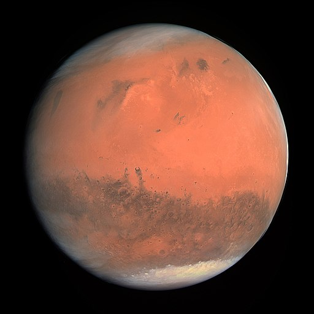

Our Next Home?
Description of Mars
Mars is the fourth planet and the furthest terrestrial planet from the Sun. The reddish color of its surface is due to finely grained iron(III) oxide dust in the soil, giving it the nickname "the Red Planet". Mars's radius is second smallest among the planets in the Solar System at 3,389.5 km (2,106 mi). The Martian dichotomy is visible on the surface: on average, the terrain on Mars's northern hemisphere is flatter and lower than its southern hemisphere. Mars has a thin atmosphere made primarily of carbon dioxide and two irregularly shaped natural satellites: Phobos and Deimos.
Images of Mars
A new mosaic of Mars marks 20 years since the launch of ESA's Mars Express, and reveals the planet's color and composition in spectacular detail.
The mosaic was created using data from Mars Express's High Resolution Stereo Camera (HRSC).
It is a composite of red, green and blue filter mosaics with the color band values stretched individually, and has a spatial resolution of 2 km per pixel (although higher resolution data products are possible and already in the works).
Darker grey-toned areas of Mars represent grey-black basaltic sands of volcanic origin; lighter patches show clay and sulphate minerals; and the large scar across the planet's face is Valles Marineris.
This annotated image of Mars shows features of the Red Planet that are visible even with the global dust storm.
NASA's Hubble Space Telescope photographed Mars on July 18, near its closest approach to Earth since 2003. The planet was observed near opposition, when the Sun, Earth and Mars are lined up, with Earth sitting in between the Sun and Mars. This proximity gives the Red Planet its brightest appearance in the night sky since the 2003 opposition.

Webb's first images of Mars, captured by its Near-Infrared Camera (NIRCam) instrument Sept. 5, 2022 [Guaranteed Time Observation Program 1415]. Left: Reference map of the observed hemisphere of Mars from NASA and the Mars Orbiter Laser Altimeter (MOLA). Top right: NIRCam image showing 2.1-micron (F212 filter) reflected sunlight, revealing surface features such as craters and dust layers. Bottom right: Simultaneous NIRCam image showing ~4.3-micron (F430M filter) emitted light that reveals temperature differences with latitude and time of day, as well as darkening of the Hellas Basin caused by atmospheric effects. The bright yellow area is just at the saturation limit of the detector.
Webb's first near-infrared spectrum of Mars, captured by the Near-Infrared Spectrograph (NIRSpec) Sept. 5, 2022, as part of the Guaranteed Time Observation Program 1415, over 3 slit gratings (G140H, G235H, G395H). The spectrum is dominated by reflected sunlight at wavelengths shorter than 3 microns and thermal emission at longer wavelengths. Preliminary analysis reveals the spectral dips appear at specific wavelengths where light is absorbed by molecules in Mars' atmosphere, specifically carbon dioxide, carbon monoxide, and water. Other details reveal information about dust, clouds, and surface features. By constructing a best-fit model of the spectrum, by the using, for example, the Planetary Spectrum Generator, abundances of given molecules in the atmosphere can be derived.